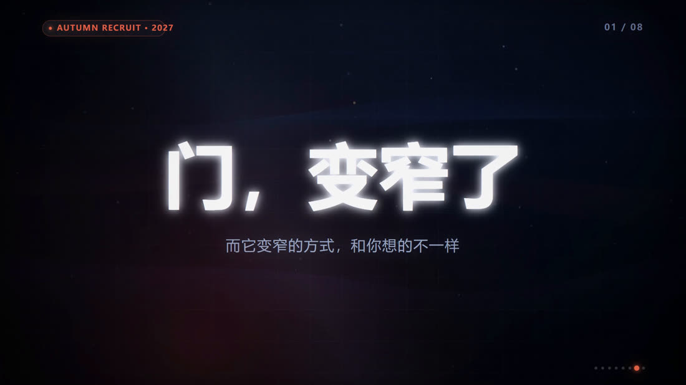
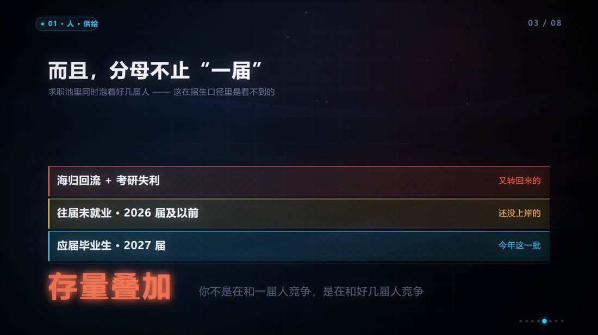
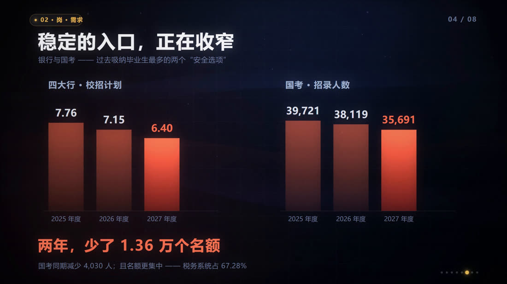
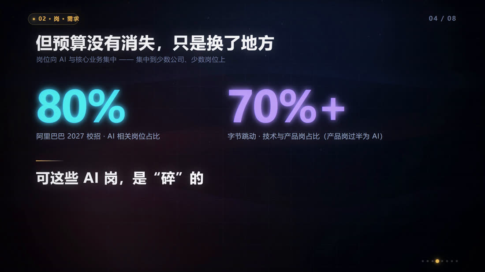
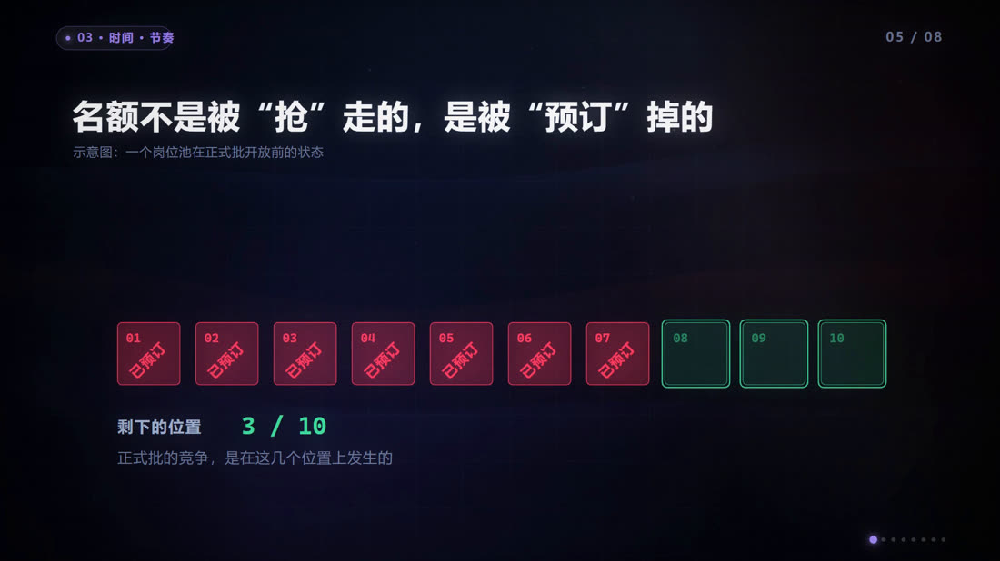
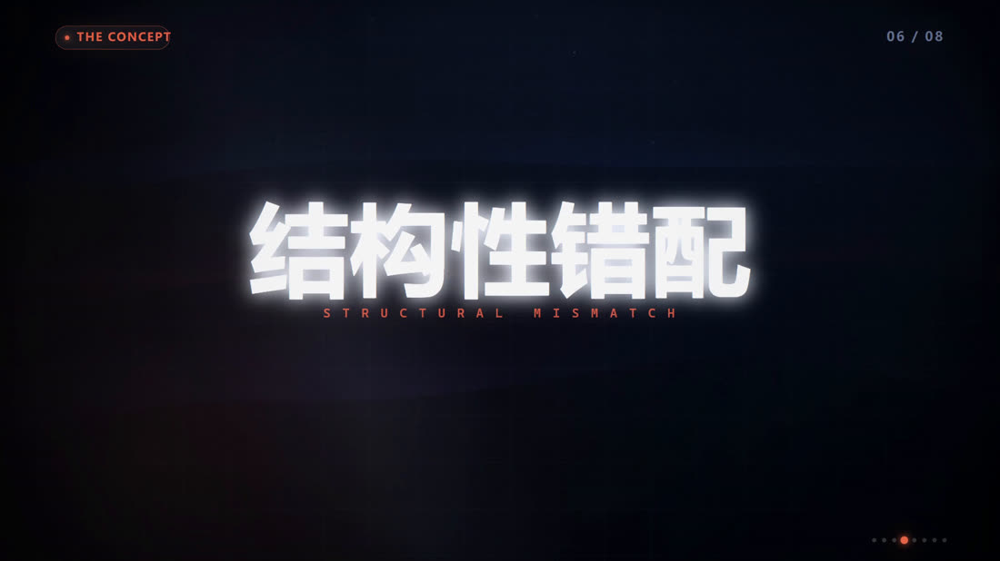
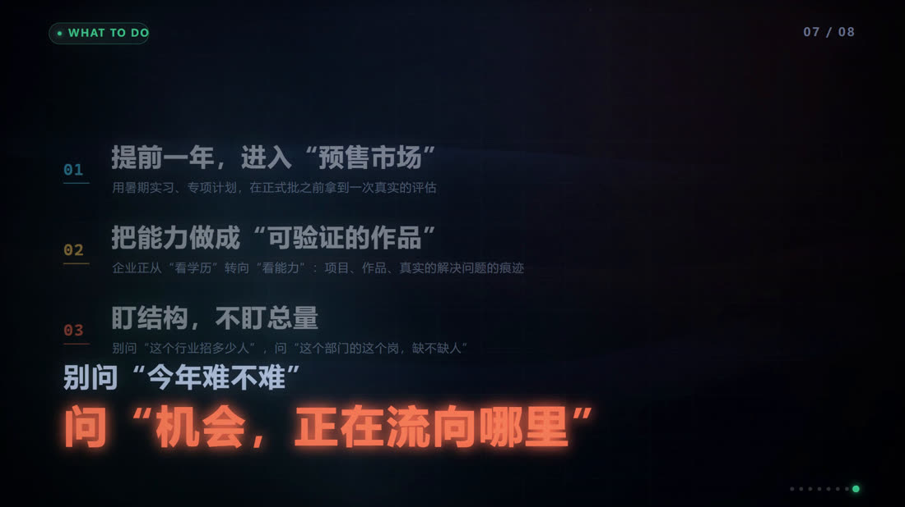

DATA FILM · 2026
一个「人人有体感、却说不清」的现象，最容易被讲成情绪。这支片子把它讲成一条可验证的因果链：前 7 秒用四个数字反差立住钩子，再从人（供给）、岗（需求结构）、时间（名额前置）三端递进，最后用一条乘法收束 —— 难度 = 人 × 岗 × 时间，任一环变形都会被另外两环放大，这就是结构性错配。
81.0s / 1080p30 / H.264 + AAC 立体声。全片无口播，信息全部由画面内排版承担 —— 建议全屏观看。视频为本地文件，不需要联网。
没有拍摄、没有素材库、没有调用任何生成模型。画面是一帧一帧用代码画出来的，声音是用 numpy 算出来的。
01确定性渲染：每一帧是时间的纯函数
八个片段各自独立出片，每帧画面都是时刻 t 的纯函数 —— 代码里禁用 requestAnimationFrame、Date.now() 和 Math.random()。给定任意 t 就能算出这一帧的完整画面，由 Playwright 逐帧截图后送 FFmpeg 编码。任意一帧都能精确重绘；改一段只重跑那一段，不存在「剪到一半发现某镜头要重拍」。
02跨段连续运动：硬切切在一直运动的背景上
粒子、光带、网格、辉光、推镜全部按全片时间 t + G0 计算，而不是按各自片段的本地时间。所以八个硬切点（0 / 7 / 14 / 26 / 40 / 53 / 62 / 74 s）落在一个始终在动的背景上，观感是「一镜到底被节奏切开」，而不是「八段拼起来」。
03低成本辉光：缩到 480×270 再模糊
整帧缩到 480×270、做 5px 高斯模糊后叠加回原图做 bloom。单帧成本约 40 ms，比全分辨率实时模糊省一个数量级，在逐帧渲染的管线里这个差距会被放大 2430 倍。
04节拍工程：110.651 BPM 拉到 120 BPM，音高不变
先用 onset 谱通量 + 全局网格搜索 + 最小二乘给配乐测速，锁定 110.651 BPM / 拍长 542.243 ms；画面按 120 BPM（拍长 500 ms）排，于是 atempo = 542.243 / 500 = 1.084487，音高不变变速后实测网格相位误差 6 ms。变速后轨长不够，取末段做卷积混响补尾，接缝样本跳变 0.0024（文件常态 0.0029）。成片音画校验：33 个关键视觉点全部落在 0.5 s 网格上（偏移 −6 ~ +24 ms）。
全片八个段落，叙事骨架集中在这几帧上 —— 从「门变窄了」到「机会正在流向哪里」。







全片 120 BPM，1 拍 0.5 s、1 小节 2 s。段落内部的硬切也全部落在 0.5 s 网格上。
| 段 | 时间 | 内容 | 停留 |
|---|---|---|---|
| s1 | 0–7 s | 钩子：四个数字反差 → 大字「门，变窄了」 | 每个数字 1.0 s，收束 2.9 s |
| s2 | 7–14 s | 概念：秋招不是考试，是一次匹配；人 / 岗 / 时间三端 | 3.7 s |
| s3 | 14–26 s | 知识点 1 · 人：上海 25.9 万、全国千万级 → 存量叠加 | 每半段 6 s |
| s4 | 26–40 s | 知识点 2 · 岗：四大行与国考收窄 → 预算转向 AI，但岗位是碎的 | 每半段 7 s |
| s5 | 40–53 s | 知识点 3 · 时间：3–5 月实习 / 6–8 月提前批 / 9–10 月正式批 / 11 月补录 → 名额被预订掉 | 每半段 6.5 s |
| s6 | 53–62 s | 收束：难度 = 人 × 岗 × 时间 → 点题「结构性错配」 | 公式 4 s，点题 4.5 s |
| s7 | 62–74 s | 行动：三条建议 → 「问机会流向哪里」 | 每条 1.7 s，收束 5 s |
| s8 | 74–81 s | 数据来源与免责声明 | 7 s，末 1 s 淡出 |
这条片子和「内容运营」有什么关系
一个「人人有体感、却说不清」的话题，最容易被做成情绪宣泄。这里的做法是先定验收标准：信息要可验证（三个公开来源交叉核对，示意数据在片尾单独声明），每屏字数按停留时间反推 —— 最短 1.7 s，重点段 4 s 以上。后一条直接导致了 50 s → 81 s 的第二次改版：不是加料，是原来太快的屏根本读不完。
这和我做内容运营的动作是同一套：先定标准，再选工具，最后把过程固化成可复用的流程。区别只是这次的「素材」是代码，「成片」是 81 秒。
这条片子是 vibecoding 完成的：代码由 AI 模型生成，但脚本与结构、视觉系统、动画编程、节拍分析与混音、数据核对与事实标注——这些是人的判断。模型负责把它写出来，我负责决定写成什么。
其中事实标注这一步不能让渡：全片数据来自三个公开来源交叉验证，而 s5 里「7/10 名额被预订」是概念示意、非实际比例，片尾已单独声明。做内容的人得自己守这条线 —— 模型不会替你判断哪句话能不能发。
这也是我认为 AI 内容生产的正确姿势：不是「让 AI 做一条片子」，而是「我说清楚要什么，AI 帮我把它造出来，我验收」。验收标准在我这边。